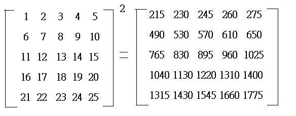

五階矩陣平方 (Square of a 5×5 matrix)
程式由網友 SuperMANganese 提供。
網友提供程式日期: 2009年8月9日
程式可以計算一個五階矩陣的平方。
程式需要在 REG Lin 模式下執行，因此在選擇新程式位置後，按 5 1 選用REG Lin模式。
注意: 藍色的英文字為統計模式中的變數，FreqOn 按 Shift MODE ← ← 1，E 是按 EXP，G按 Shift 7 ← 3 。
程式 (240 bytes)
FreqOn: Lbl 1: 1 DT: 0→X: For 1→M To 5: ?→Y:
E3X-5E2+Y→X: Next: E-12X→X: A→Y: Σx≧5 => Goto 2:
B→A: C→B: D→C: X→D: Goto 1: Lbl 2: Σy: ClrStat:
, Ans+1 DT: Fix 0: Lbl 3: (5E2+Rnd(Y+ . 5))(5E2+Rnd(A+ . 5 , 0 DT:
Rnd(Y+ . 5: E3(Y-Ans+E-15Ans→Y: Rnd(A+ . 5: E3(A-Ans+E-15Ans→M:
B→A: C→B: D→C: X→D: M→X: n≦5 => Goto 3: Norm 1: Σx◢
Σy<5 => Goto 2: D=Y => X→Y: C=Y => D→Y: B=Y => C→Y:
A=Y => B→Y: , -5 DT: Goto 2
註: 原矩陣的數據須為整數，而且 -400<x<400,
例題: 計算
按 Prog 1 再按 1 EXE 2 EXE 3 EXE 4 EXE 5 EXE 6 EXE 7 EXE 8 EXE 9 EXE 10 EXE
11 EXE 12 EXE 13 EXE 14 EXE 15 EXE 16 EXE 17 EXE 18 EXE 19 EXE 20 EXE
21 EXE 22 EXE 23 EXE 24 EXE 25 EXE
(顯示215) EXE (顯示230) EXE (顯示245) EXE (顯示260) EXE (顯示275) EXE
(顯示490) EXE (顯示530) EXE (顯示570) EXE (顯示610) EXE (顯示650) EXE
(顯示765) EXE (顯示830) EXE (顯示895) EXE (顯示960) EXE (顯示1025) EXE
(顯示1040) EXE (顯示1130) EXE (顯示1220) EXE (顯示1310) EXE (顯示1400) EXE
(顯示1315) EXE (顯示1430) EXE (顯示1545) EXE (顯示1660) EXE (顯示1775)
所以

返回 CASIO fx-50FH、fx-3650P II、fx-50FH II及fx-50F PLUS 程式集